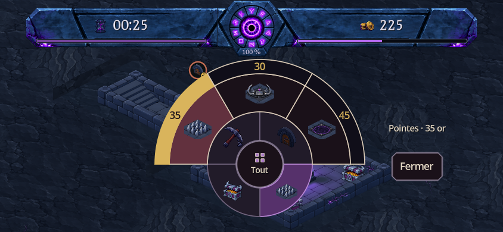
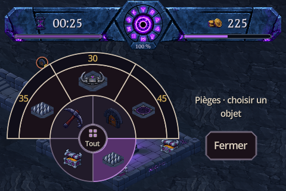
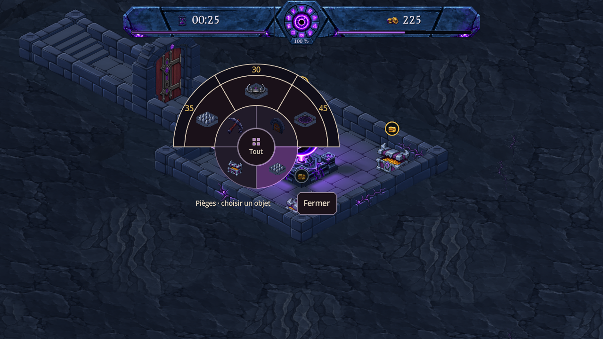
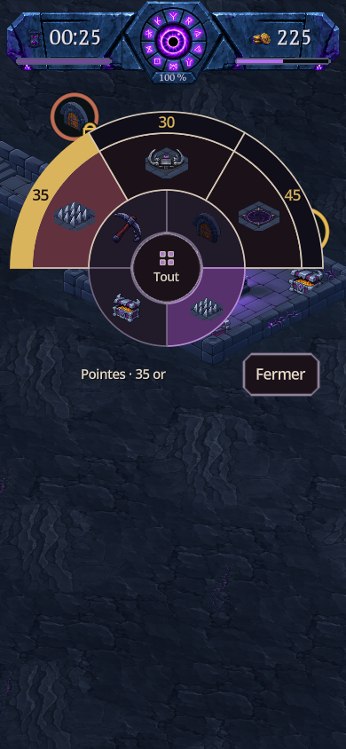

Menu radial : plus lisible, prix dans leur anneau
Captures du jeu dans Godot. Le menu passe de 252 à 352 unités de diamètre lorsque l’espace le permet. Chaque action conserve son icône dans le secteur principal ; son prix est centré dans la bande extérieure. Cette bande devient dorée sous le doigt ou au survol et permet aussi de choisir l’action.
Les quatre familles gardent leur place, « Tout » ouvre le catalogue de la famille et les montants restent ceux du jeu. Sur les petits paysages, les indications passent à droite avant de réduire le diamètre.
Paysage — appui sur Pointes

Petit paysage — 480 × 320

Vue d’ensemble — 1280 × 720

Portrait — 390 × 844

11 formats vérifiés, 1 589 contrôles du radial sans échec, interactions mobiles et rotation vérifiées. Toucher direct, achat unique, annulation, glissé et coins du bouton central testés. Ces captures et événements natifs ne remplacent pas un essai sur téléphone physique. Aucun APK créé.